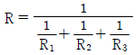
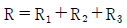
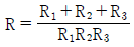
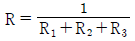
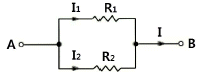
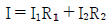
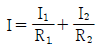
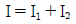
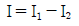

농기계정비기능사 (2014-04-06 기출문제)
1과목: 농기계정비
1. 다음 중 직접 분사식의 장점으로 옳은 것은?
- 발화점이 낮은 연료를 사용하면 노크가 일어나지 않는다.
- 연소압력이 낮으므로 분사압력도 낮게 하여도 된다.
- 실린더 헤드구조가 간단하므로 열에 대한 변형이 적다.
- 핀틀형 노즐을 사용하므로 고장이 적고 분사압력도 낮다.
(정답률: 77%)

2. 동력경운기에 부착하는 작업기 풀리 지름이 21㎝이고, 기관회전속도가 200rpm이며, 작업기의 회전속도가 850rpm일 때 기관풀리의 지름(㎝)은 약 얼마인가?
- 8.93
- 0.11
- 49.41
- 80.95
(정답률: 56%)
3. 클러치판 점검 시 클러치 페이싱에 오일이 부착되는 원인이 아닌 것은?
- 크랭크 축 또는 구동축 오일 시일의 불량 시
- 실린더 및 피스톤 마모로 오일 상승 시
- 기관 또는 변속기에 너무 많은 오일 보급 시
- 릴리스 베어링에서 그리스 누설 시
(정답률: 54%)
4. 다음 중 기관의 밸브 점검 항목으로 가장 적합하지 않은 것은?(오류 신고가 접수된 문제입니다. 반드시 정답과 해설을 확인하시기 바랍니다.)
- 회전반경 최소
- 선회 시 흙 밀림 방지
- 작업 시 편의성 향상
- 작업 중 배속턴 작동과 별도로의 편브레이크 작동
(정답률: 53%)
5. 다음 중 기관의 밸브 점검 항목으로 가장 적합하지 않은 것은?
- 밸브의 크기
- 면의 접촉 상태
- 마멸 및 소손
- 밸브 마진 두께
(정답률: 78%)
6. 동력경운기의 변속레버가 들어가지 않을 때 고장원인에 해당되는 것은?
- 엔진오일이 많을 때
- 엔진오일이 부족할 때
- 주변속 레버가 굽었을 때
- 클러치 마찰판이 탓거나 압력 스프링이 약할 때
(정답률: 72%)
7. 다음 중 트랙터 기관에서 라디에이터 캡을 열어 보았더니 냉각수에 기름이 떠 있을 경우 그 원인으로 가장 적합한 것은?
- 연료필터 불량
- 엔진오일 펌프 파손
- 헤드 가스킷의 파손
- 피스톤링 불량
(정답률: 82%)
8. 콤바인 전처리부의 끌어올림 체인 고장 시 고쳐야 할 내용 설명으로 틀린 것은?
- 러그가 마모되면 뒤집어 끼운다.
- 체인을 교환할 때에는 러그의 편차가 10~30㎜ 이내로 맞춘다.
- 텐션스토퍼 장착 시에는 스토퍼의 길이가 18㎜ 이하로 조립한다.
- 자동텐션 방식일 경우에는 스프링 길이가 기준치가 되도록 조정한다.
(정답률: 80%)
9. 다음 중 실린더 마모량 측정 시 필요한 측정 게이지로 가장 적합하지 않은 것은?
- 틈새 게이지
- 텔레스코핑 게이지
- 외측 마이크로미터
- 실린더 보어 게이지
(정답률: 53%)
10. 다음 중 가솔린 기관의 압축압력을 측정하는 작업으로 틀린 것은?
- 기관을 작동온도로 한다.
- 공기 청정기를 떼어낸다.
- 압축 압력계를 점화플러그 구멍에 설치한다.
- 초크 밸브는 열어 두고, 스로틀 밸브는 닫아 준다.
(정답률: 64%)
11. 다음 중 경운기 브레이크 링의 외경 측정 방법을 옳게 표시한 것은?
- 브레이크 링의 절개부 틈새를 8㎜가 되도록 하고 측정한다.
- 브레이크 링의 절개부 틈새가 외부의 힘이 없이 자연스럽게 벌여져 있는 상태에서 측정한다.
- 브레이크 링의 절개부 틈새를 붙여서 측정한다.
- 브레이크 링의 절개부 틈새를 붙었을 때와 틈새가 벌어져 있는 상태를 각각 측정한 후 틈새를 계산한다.
(정답률: 43%)
12. 다음 중 동력경운기에서 가장 많이 사용되는 조향클러치 형식은?
- 유압식 클러치
- 맞물림 클러치
- 다판식 클러치
- 원판마찰식 클러치
(정답률: 80%)
13. 다음 중 브레이크 페달을 밟아도 정차하지 않는 이유로 가장 적합하지 않은 것은?
- 라이닝과 드럼의 압착상태 불량
- 라이닝 재질 불량 및 오일 부착
- 브레이크 파이프의 막힘
- 타이어 공기압의 부족
(정답률: 89%)
14. 트랙터의 축간 거리가 2.5m이고, 바깥바퀴의 조향각이 30°이다. 이때 최소 회전반경은 얼마인가?
- 4.3m
- 5.1m
- 6.5m
- 7.5m
(정답률: 59%)
15. 압축비가 9인 실린더의 행정체적이 640cc이다. 연소실체적은 얼마인가?
- 70cc
- 80cc
- 90cc
- 100cc
(정답률: 50%)
16. 다목적 관리기 점화플러그는 수시로 분해하여 전극 부위의 그을음을 청소하고, 간격을 점검하여야 한다. 다음 중 다목적 관리기의 점화플러그 간극으로 옳은 것은?
- 0.01 ~ 0.02㎜
- 0.1 ~ 02㎜
- 0.3 ~ 0.4㎜
- 0.6 ~ 0.8㎜
(정답률: 41%)
17. 트랙터를 이용한 땅속작물수확기를 선정하기 위해 필요한 사항이 아닌 것은?
- 수확하고자 하는 작물의 종류를 알아야 한다.
- 이랑의 폭을 알아야 한다.
- 트랙터의 마력을 알아야 한다.
- 최종운반거리를 알아야 한다.
(정답률: 80%)
18. 동력경운기 주클러치의 고장원인 중 틀린 것은?
- 클러치판이 새 것일 때
- 마찰판에 기름이 묻었을 때
- 클러치 간극이 맞지 않을 때
- 압력스프링이 절손 혹은 쇠약할 때
(정답률: 85%)
19. 다음 중 동력분무기의 V패킹 교환 정비 시 안쪽과 바깥쪽에 발라 주어야 하는 물질로 가장 적당한 것은?
- 엔진오일
- 기어오일
- 그리스
- 물 또는 부동액
(정답률: 84%)
20. 다음 중 건조와 저장을 동시에 할 수 있는 건조기는?
- 벌크 건조기
- 순환식 건조기
- 태양열 건조기
- 원형 빈(bin) 건조기
(정답률: 71%)
2과목: 농기계전기
21. 기어가 서로 물릴 때 원추형 마찰 클러치에 의하여 상호 회전속도를 일치시킨 후 기어를 맞물리게 하여 고속 회전 중에도 변속이 용이한 변속기는?
- 상시 물림식 변속기
- 동기 물림식 변속기
- 선택 물림식 변속기
- 미끄럼 물림식 변속기
(정답률: 69%)
22. 동력경운기용 트레일러의 브레이크 페달 유격( ㉠ ) 및 드럼과 라이닝의 간격( ㉡ )으로 가장 적합한 것은?
- ㉠ 20 ~30㎜, ㉡ 2㎜
- ㉠ 10 ~20㎜, ㉡ 2㎜
- ㉠ 10 ~20㎜, ㉡ 0.2 ~ 0.6.㎜
- ㉠ 20 ~30㎜, ㉡ 0.2 ~ 0.6.㎜
(정답률: 46%)
23. 트랙터에서 동력취출장치(PTO) 축(6홈 스플라인)의 국제표준 회전속도는 얼마인가?
- 340rpm
- 540rpm
- 1000rpm
- 1540rpm
(정답률: 83%)
24. 다음 중 농용 트랙터 유압장치를 이용하여 작업기를 들어 올린 후 내리려고 할 때 작업기가 내려가지 않는 이유와 가장 거리가 먼 것은?
- 유압 제어 밸브의 고장
- 유압 실린더의 파손
- 리프트축 회동부의 유착
- 흡입 파이프에서 공기 유입
(정답률: 77%)
25. 다음 중 로터리의 경운날 조립 형태에 대한 설명으로 틀린 것은?
- 경운날은 보통형, 작두형과 L자형 등이 있다.
- 경운날은 왼쪽 날과 오른쪽 날로 구분된다.
- 플랜지 형태의 경운날 조립은 플랜지의 좌측에만 조립한다.
- 경운날의 전체적인 조립유형은 나선형 방향으로 되어 있다.
(정답률: 78%)
26. 경운기가 주행 중 변속기의 기어가 빠지는 원인으로 가장 타당한 것은?
- 변속기어의 이상마모와 물림 불량
- 기어오일이 부족할 때
- 클러치판의 고착
- 기어 쉬프트의 마모과대
(정답률: 72%)
27. 크랭크 축을 V블록과 다이얼 인디케이터로 측정하여 다이얼게이지에 0.08㎜를 나타내면 실제 크랭크축의 휨은 어느 정도인가?
- 0.08㎜
- 0.03㎜
- 0.04㎜
- 0.09㎜
(정답률: 74%)
28. 다음 중 4조식 이앙기로 작업할 때 결주가 생기는 원인이 아닌 것은?
- 주간 간격이 좁다.
- 파종량이 불균일하다.
- 분리침이 마모되었다.
- 세로 이송 롤러가 작동불량이다.
(정답률: 64%)
29. 다음 중 연소실에 윤활유가 올라와 연소할 때의 배기가스의 색은?
- 청색
- 백색
- 무색
- 흑색
(정답률: 69%)
30. 다음 중 습지에서와 같이 토양의 추진력이 약한 곳이나 차륜의 슬립이 심한 곳에서 사용할 수 있도록 트랙터 내 장착된 장치는?
- 유성기어장치
- 유압변속장치
- 차동잠금장치
- 동력취출장치
(정답률: 82%)
31. 다음 중 광도의 단위로 옳은 것은?
- lm
- lx
- cd
- W
(정답률: 77%)
32. 코일에 흐르는 전류를 변화시키면 코일에 그 변화를 방해하는 방향으로 기전력이 발생되는 작용은?(오류 신고가 접수된 문제입니다. 반드시 정답과 해설을 확인하시기 바랍니다.)
- 정전작용
- 상호유도작용
- 전자유도작용
- 승압작용
(정답률: 55%)
33. 저항 R1, R2, R3를 병렬접속 시켰을 때 합성저항은?




(정답률: 66%)
34. 변압기의 1차 권수 80회, 2차 권수 320회일 때, 2차 측의 전압이 100V이면 1차 측의 전압은 몇 V인가?
- 15V
- 25V
- 50V
- 100V
(정답률: 75%)
35. 시동 전동기에 대한 설명으로 틀린 것은?
- 정지된 기관을 기동시키기 위한 전동기이다.
- 오버 러닝 클러치가 회전축에 설치되어 있다.
- 시동 전동기는 엔진 동작 후에도 엔진과 맞물려 회전한다.
- 시동 전동기는 시동할 때 매우 큰 전류가 흐른다.
(정답률: 70%)
36. 전기적 에너지를 받아서 기계적 에너지로 바꾸는 것은?
- 전동기
- 정류기
- 변압기
- 발전기
(정답률: 81%)
37. 다음 중 시동 전동기가 작동하지 않는 이유와 가장 거리가 먼 것은?
- 축전지가 방전되었다.
- 시동 전동기의 스위치가 불량하다.
- 시동 전동기의 피니온이 링기어에 물리었다.
- 기화기에 연료가 꽉 차있다.
(정답률: 87%)
38. 100V의 전압에서 1A의 전류가 흐르는 전구를 10시간 사용하였다면 전구에서 소비되는 전력량(Wh)은?
- 60000
- 1000
- 100
- 10
(정답률: 72%)
39. 직류 직권전동기의 설명 중 적합하지 않은 것은?
- 기동 회전력이 크다.
- 회전속도의 변화가 비교적 크다.
- 회전력은 전기자전류와 계자자속의 곱에 비례한다.
- 직류 직권전동기에 발생하는 역기전력은 속도에 반비례한다.
(정답률: 58%)
40. 다음 중 퓨즈 블링크의 설명으로 옳은 것은?
- 아주 미세한 전류가 흐르는데 사용한다.
- 여러 개의 퓨즈를 한군데로 모아서 연결한 것이다.
- 전류가 역류하는 것을 방지하는 것이다.
- 과전류가 흐를 때 단선 되도록 한 전선의 일종이다.
(정답률: 70%)
3과목: 농기계안전관리
41. 그림과 같은 회로에서 전류 I는?





(정답률: 41%)
42. 전압계를 사용하는 방법에 대한 설명으로 잘못된 것은?
- 직류전압 측정 시 전압계의 (＋)단자와 (-)단자의 극성을 정확히 연결한다.
- 전압계의 다이얼을 낮은 전압 위치에 놓고 측정 후 점차 높은 전압 위치에 놓는다.
- 측정하고자 하는 부하와 병렬로 연결한다.
- 측정범위에 알맞은 전압계를 선택한다.
(정답률: 64%)
43. 동선의 단면적을 1배, 길이를 2배로 했을 때 전기 저항의 변화는?
- 1/4로 된다.
- 1/2로 된다.
- 변하지 않는다.
- 2배가 된다.
(정답률: 38%)
44. 단속기 접점 간극이 규정보다 클 때 옳은 것은?
- 점화시기가 빨라진다.
- 캠각이 커진다.
- 점화코일에 흐르는 1차 전류가 많아진다.
- 점화시기가 늦어진다.
(정답률: 51%)
45. 일반적인 전동기의 장점이 아닌 것은?
- 기동 운전이 용이하다.
- 소음 및 진동이 적다.
- 고장이 적다.
- 전선으로 전기를 유도하므로 이동작업에 편리하다.
(정답률: 68%)
46. 모든 작업자가 안전 업무에 직접 참여하며, 안전에 관한 지식, 기술 등의 개발이 가능하며, 안전 업무의 지시 전달이 신속 정확하고, 1,000명 이상의 기업에 적용되는 안전관리의 조직은?
- 직계식 조직
- 참모식 조직
- 수평식 조직
- 직계·참모식 조직
(정답률: 66%)
47. 다음 중 가장 강한 조도를 필요로 하는 것은?
- 저속작업, 정교한 끝맺음 작업
- 포장 및 출하 작업
- 자동기계작업 및 운전 작업
- 정밀연마, 조정 및 조립
(정답률: 86%)
48. 원동기 운전 중 주의사항으로 보통 25시간마다 점검해야 되는 것은?
- 흡·배기 밸브의 카본 제거
- 연료 및 윤활유의 유무 확인
- 기화기 청소
- 공기청정기 청소
(정답률: 57%)
49. 작업 조건에 따른 작업과 보호구의 관계로 옳지 않는 것은?
- 물체가 떨어지거나 날아올 위험 - 안전모
- 물체의 낙하, 충격, 물체에의 끼임 등의 위험이 있는 작업 - 작업화
- 용접 시 불꽃 또는 물체가 날아 흩어질 위험이 있는 작업 - 방진마스크
- 감전의 위험이 있는 작업 – 절연용 보호구
(정답률: 84%)
50. 다음 고압가스 용기 중 수소가스 용기의 색깔은?
- 녹색
- 주황색
- 백색
- 황색
(정답률: 56%)
51. 트랙터에 로터리 작업기 탈·부착 방법의 안전사항 중 옳은 방법은?
- 작업기의 탈·부착은 15° 이내 경사지에서 실시한다.
- 작업기의 탈·부착은 반드시 3인 이상이 해야 한다.
- 작업기는 평지에서 부착 후 수평조절을 해야 한다.
- 작업기의 탈·부착은 기체 본체를 완전히 후진하여 상부 링크부터 연결한다.
(정답률: 74%)
52. 재해로부터 인간의 생명과 재산을 보호하기 위한 계획적이고, 체계적인 활동을 무엇이라고 하는가?
- 안전 사고
- 안전 관리
- 재해 방지
- 재산 관리
(정답률: 79%)
53. 부품의 세척 작업 중 알칼리성이나 산성의 세척유가 눈에 들어갔을 경우에 가장 좋은 응급조치 방법은?
- 먼저 바람 부는 쪽을 향해 눈을 크게 뜨고 눈물을 흘린다.
- 먼저 산성 세척유로 중화시킨다.
- 먼저 붕산수를 넣어 중화시킨다.
- 먼저 흐르는 수돗물로 씻어낸다.
(정답률: 87%)
54. 스피드스프레이어(SS기)의 재해 예방 대책으로 볼 수 없는 것은?
- 분무 작업은 고속으로 주행하면서 한다.
- 야간 및 비가 오는 날에는 운전을 자제한다.
- 점검 및 정비 시 떼어낸 덮개 등은 점검 및 정비 완료 후 모두 다시 부착한다.
- 작업자는 기계적 위험과 화학적 위험을 동시에 방호할 수 있는 복장을 선택한다.
(정답률: 89%)
55. 드릴작업 시 보안경 착용은?
- 항상 반드시 착용한다.
- 저속 시에만 착용한다.
- 고속 시에만 착용한다.
- 목공작업에만 착용한다.
(정답률: 90%)
56. 근로시간 1,000시간당의 재해로 인하여 손실된 노동 손실 일수를 나타낸 것은?
- 천인율
- 도수율
- 강도율
- 연천인율
(정답률: 48%)
57. 전기에 의한 화재의 진화작업 시 사용해야할 소화기 중 가장 적합한 것은?
- 탄산가스 소화기
- 산, 알칼리 소화기
- 포말 소화기
- 물 소화기
(정답률: 59%)
58. 다음의 안전색채 중에서 “주의”에 대한 색은?
- 빨강
- 초록
- 노랑
- 파랑
(정답률: 79%)
59. 실린더 헤드 볼트를 조일 때 마지막으로 사용하는 공구는?
- 토크렌치
- 소켓렌치
- 오픈엔드렌치(스패너)
- 조정렌치(몽키)
(정답률: 84%)
60. 다음 중 인화성 유해 위험물에 대한 공통적인 성질을 설명한 것으로 틀린 것은?
- 착화온도가 낮은 것은 위험하다.
- 물보다 가볍고 물에 녹기 어렵다.
- 발생된 가스는 대부분 공기보다 가볍다.
- 발생된 가스는 공기와 약간 혼합되어도 연소의 우려가 있다.
(정답률: 69%)